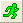

Letztes Update: 20.07.2018
Die Farbe des Schlosses im Ergebnisdatenblatt und dem Diagrammfenster zeigt den Status.
Ändern sich die Quelldaten, wird das Schloss gelb, um anzuzeigen, dass eine Neuberechnung benötigt wird. Sie können auf das Schloss klicken, um eine Neuberechnung auszuführen oder Parameter zu ändern.
Die Schaltfläche Neuberechnen in der Symbolleiste Standard  zeigt ebenfalls an, wenn eine Aktualisierung notwendig ist. Sie wird dann auch gelb,  . Durch Klicken auf diese Schaltfläche wird jedes Ergebnis des Projekts aktualisiert, das eine Aktualisierung benötigt. Wenn Sie die Maus über die Schaltfläche ziehen, erscheint eine Nachricht, die Ihnen anzeigt, wie viele Aktualisierungen notwendig sind.
. Durch Klicken auf diese Schaltfläche wird jedes Ergebnis des Projekts aktualisiert, das eine Aktualisierung benötigt. Wenn Sie die Maus über die Schaltfläche ziehen, erscheint eine Nachricht, die Ihnen anzeigt, wie viele Aktualisierungen notwendig sind.
Schlüsselwörter: Schloss, Symbol, rot, automatisch, Aktualisierung, gelb, grün